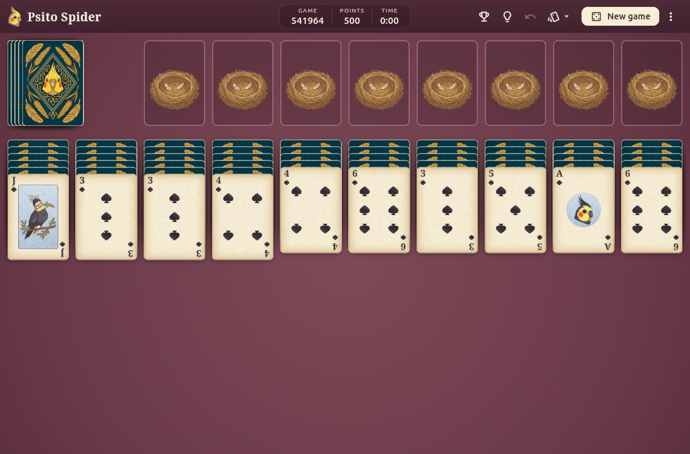
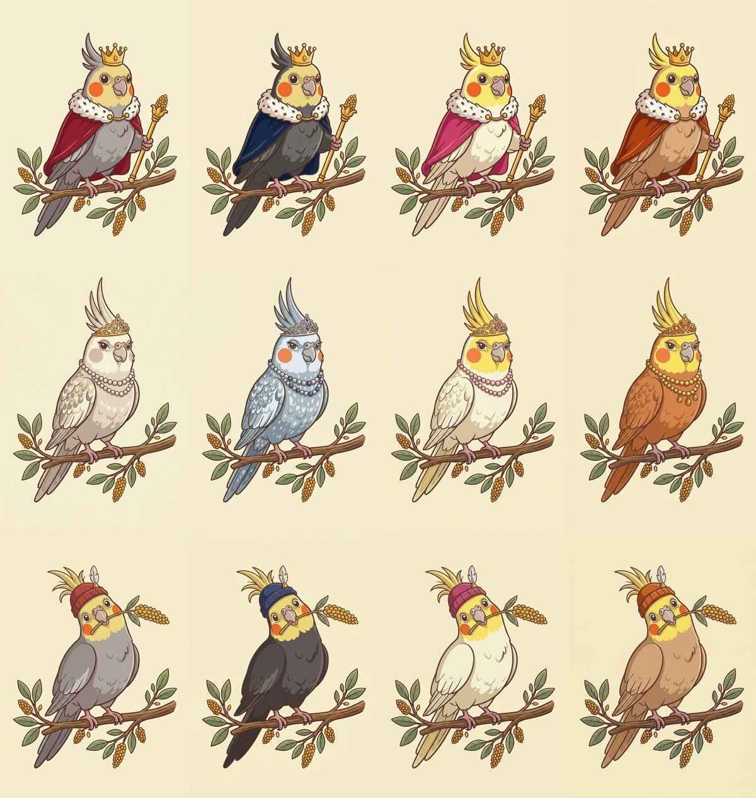

Spider solitaire, with cockatiels.
Spider solitaire for Windows and Linux, with illustrated cockatiels on the cards. No ads, no telemetry and no account: just a little game and some happiness.
A look inside


The game follows your system's language, in seven languages.
What it does
- Classic rules, with ten columns, two decks and eight nests
- One, two or four suits, with a table of best games for each
- Hints, unlimited undo and numbered games: the same number always gives the same deal
- Cards that flip, hop, shake their heads at a wrong move and bounce when you win
- A curious cockatiel that peeks at the table when you stop to think
- Works offline. It sends nothing anywhere
Install
Windows
On Windows 10 (1809 or newer) or Windows 11, on x64. It doesn't ask for administrator rights.
SmartScreen may warn about an unknown publisher, because the installer isn't signed with a paid certificate. Choose More info, then Run anyway.
Debian, Ubuntu, Mint
On Debian 13, Ubuntu 24.04, Mint 22 or newer, on amd64. It updates along with the system.
sudo mkdir -p /etc/apt/keyrings curl -fsSL https://francisceioseph.github.io/psito-spider/psito-spider.asc | sudo tee /etc/apt/keyrings/psito-spider.asc >/dev/null printf 'Types: deb\nURIs: https://francisceioseph.github.io/psito-spider\nSuites: stable\nComponents: main\nArchitectures: amd64\nSigned-By: /etc/apt/keyrings/psito-spider.asc\n' | sudo tee /etc/apt/sources.list.d/psito-spider.sources >/dev/null sudo apt update sudo apt install psito-spider
To remove it, and the repository
sudo apt remove psito-spider sudo rm /etc/apt/sources.list.d/psito-spider.sources /etc/apt/keyrings/psito-spider.asc
Fedora
On x86_64. It updates along with the system. The first install asks you to accept the signing key.
sudo curl -fsSL -o /etc/yum.repos.d/psito-spider.repo https://francisceioseph.github.io/psito-spider/psito-spider.repo sudo dnf install psito-spider
To remove it, and the repository
sudo dnf remove psito-spider sudo rm /etc/yum.repos.d/psito-spider.repo
Another system? You can download the package or build from source.